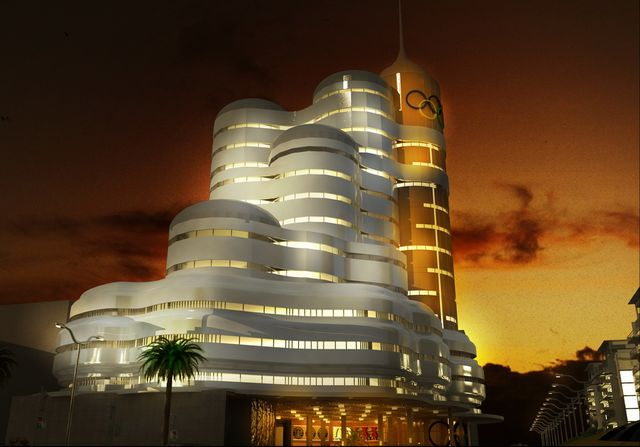

Continental Savoy Hotel and Shopping Complex
Hospitality project · Cairo, Egypt
Hotel and shopping complex at Gomhoreya Square in Cairo for Misr Hotels Company.
Partners
PUD
Client

More from Cairo
 Downtown Cairo RegenerationCairo · 2012
Downtown Cairo RegenerationCairo · 2012
Olympic Plaza Tower, MaadiMaadi, Cairo · 2008 Rotana Offices and Studios, Nile PlazaGarden City, Cairo · 2005
Rotana Offices and Studios, Nile PlazaGarden City, Cairo · 2005 Hilton Dahab Village HotelDahab, Sinai · 1991
Hilton Dahab Village HotelDahab, Sinai · 1991 Tut Amun Village Hotel and ResortAswan · 1981
Tut Amun Village Hotel and ResortAswan · 1981 Rotana Cafe, ZamalekZamalek, Cairo · 2008
Rotana Cafe, ZamalekZamalek, Cairo · 2008